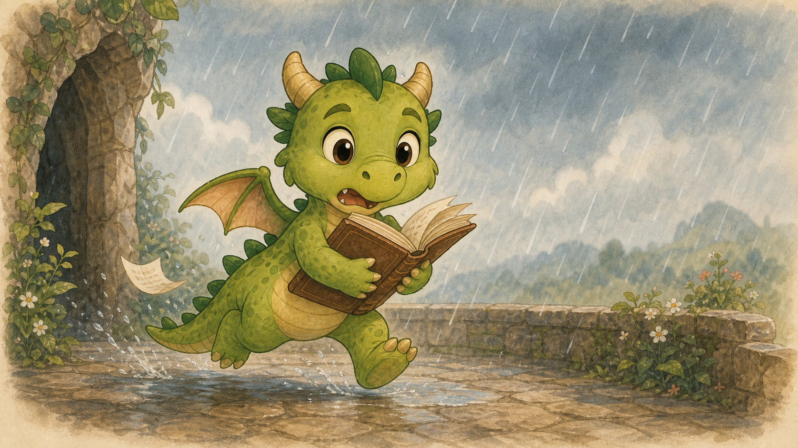

Rozprávka 2
Ako Poletucha skoro prečítala oblohu

Ráno v dračej jaskyni začalo tak ako zvyčajne.
Slnečný lúč sa opatrne pretiahol cez vchod, poskočil po jednej zlatej minci, potom po druhej, chvíľu sa tváril, že nevie, kam ide, a napokon pošteklil Uhlíka na nose.
Uhlík sa zo sna zamračil.
„Nie,“ zamrmlal.
Lúč ho pošteklil ešte raz.
„Hapčí!“
Z Uhlíkovho nosa vyletela ohnivá guľa, prefrčala ponad spiacich súrodencov, minula maminu zadnú labu, odrazila sa od medeného štítu, ktorý tam kedysi niekto odložil a potom sa k nemu už nikdy nepriznal, a zapadla rovno pod kamenný stôl v kuchyni.
Raždie vzbĺklo.
Kamenná doska sa začala zohrievať.
Štyri farebné hrnčeky na nej začali jemne klopkať, ako sa v nich zohrievala varená čokoláda.
Najprv sa zobudil Mokroš.
„Cítim čokoládu,“ povedal s očami ešte zatvorenými. „Ak je to sen, nech ma nikto nebudí.“
Potom sa zobudila Spievanka. Najprv si natiahla jednu labku, potom druhú, potom jedno krídlo, potom druhé, a pri tom všetkom si pospevovala tak potichu, že to znelo ako vankúš, ktorý sa učí spievať.
Poletucha sa nezobudila.
To bolo zvláštne.
Poletucha sa zvyčajne zobúdzala rýchlo. Niekedy tak rýchlo, že bola hore skôr, než vôbec zistila, že spala. Teraz však ležala na boku, čumák mala zaborený v otvorenej knihe a jedno krídlo jej trčalo do vzduchu ako malý zelený stan.
Uhlík k nej podišiel.
„Poletucha.“
Nič.
„Poletucha!“
Nič.
Mokroš si odpil z modrého hrnčeka a povedal:
„Skús jej povedať, že jej horí kniha.“
Uhlík sa nadýchol.
Poletucha okamžite vyskočila.
„Kde?!“
Rozhliadla sa tak rýchlo, že skoro trafila Uhlíka krídlom po nose.
„Nikde,“ povedal Mokroš. „Len sme ťa chceli zobudiť.“
Poletucha si pritlačila knihu k hrudi.
„S knihami sa takto nežartuje.“
„S tebou sa inak nedá,“ povedal Uhlík.
Poletucha si sadla ku kamennému stolu a vzala si svoj zelený hrnček. Pod očami mala tmavé krúžky.
„Čítala si celú noc?“ spýtala sa Spievanka.
„Nie celú,“ povedala Poletucha.
Všetci sa na ňu pozreli.
„Dobre. Celú.“
„O čom bola?“ spýtala sa Spievanka.
Poletuche sa rozžiarili oči.
„O oblakoch.“
Uhlík prestal piť.
„O čom?“
„O oblakoch,“ zopakovala Poletucha. „Volá sa to Veľká kniha oblakov, pary, hmly, dažďa a iných vecí, ktoré padajú zhora a tvária sa, že s tým nič nemajú.“
Mokroš sa naklonil bližšie.
„Je tam dážď?“
„Veľa dažďa.“
„To znie ako múdra kniha.“
„A píše sa tam,“ pokračovala Poletucha dôležito, „že oblaky sa dajú podľa tvaru čítať.“
Spievanka zatlieskala.
„Obloha je kniha!“
„Presne,“ povedala Poletucha. „A ja ju dnes prečítam.“
Uhlík pozrel von z jaskyne. Nad horou sa naozaj vznášali oblaky. Veľké, biele a pomalé. Jeden vyzeral ako baran. Druhý ako rozliaty tvaroh. Tretí ako kráľovský klobúk po tom, čo si naň sadla koza.
„A čo sa z oblakov číta?“ spýtal sa Uhlík.
„Počasie. Znamenia. Možno budúcnosť.“
Mama dračica, ktorá dovtedy spala na poklade a tvárila sa, že nič nepočuje, otvorila jedno oko.
„Budúcnosť radšej nechajte budúcnosti,“ zamrmlala. „Aj tak príde sama a obyčajne nevie klopať.“
„Ja budem len opatrne čítať,“ sľúbila Poletucha.
Mama dračica zavrela oko.
„To hovoríš vždy pred tým, než niekde narazíš.“
Poletucha sa tvárila, že to nepočula. Išlo jej to výborne, lebo keď sa začítala, nepočula naozaj nič.
Po raňajkách vyšli dráčiky na terasu.
Terasa bola čoraz krajšia. Na jednej strane stálo ihrisko s húpačkou nad priepasťou, preliezkami, rýchlym kolotočom a hradom na rytierske zápasy. Na druhej strane sa ligotal kamenný bazénik, ktorý si dráčiky postavili v horúci deň, keď Mokroš tvrdil, že sa topí suchom.
Mokroš si hneď namočil chvost.
„Len čítaj,“ povedal Poletuche. „Ak z oblohy vyčítaš dážď, mám záujem.“
Poletucha vyletela na najvyššiu skalu nad jaskyňou, otvorila knihu a začala porovnávať obrázky s oblohou.
„Tento oblak,“ povedala, „je vysoký, biely a chumáčový.“
„To znamená čo?“ spýtala sa Spievanka.
Poletucha listovala.
„Pekné počasie.“
„To si vedela aj bez knihy,“ povedal Uhlík. „Je pekne.“
„Veda,“ povedala Poletucha, „je, keď vieš presne, prečo máš pravdu.“
To znelo veľmi múdro, a tak chvíľu nikto nič nepovedal.
Potom Poletucha ukázala na ďalší oblak.
„Aha! Tamten je natiahnutý ako stará ponožka.“
„To je odborný názov?“ spýtal sa Mokroš.
Poletucha pozrela do knihy.
„Nie. Ale mal by byť.“
Vtom zafúkal vietor.
Oblak, ktorý pred chvíľou vyzeral ako ponožka, sa natiahol ešte viac, roztrhol sa na dva kúsky a jeden z nich sa pomaly presunul pred slnko.
Na terase sa zotmelo.
Uhlík zdvihol hlavu.
„Hej. Kto vypol teplo?“
„To je len oblak,“ povedala Poletucha. „Podľa knihy neškodný.“
Oblak sa zväčšil.
Potom sa spojil s ďalším.
Potom s tretím.
A napokon sa nad horou usadila veľká sivá perina, ktorá sa tvárila, že sa jej nikam nechce.
Mokroš sa usmial.
„To vyzerá mokro.“
„To vyzerá podozrivo,“ povedal Uhlík.
Poletucha rýchlo listovala v knihe.
„Možno bude slabý dážď.“
Z oblaku spadla prvá kvapka.
Dopadla Uhlíkovi priamo na nos.
„Toto je osobné,“ povedal Uhlík.
Spadla druhá kvapka.
Potom tretia.
Potom desať.
Potom tisíc.
Za chvíľu pršalo tak, že bazénik bol plný po okraj a Mokroš stál uprostred terasy s otvorenou papuľou, pretože si myslel, že život je krásny a voda zadarmo je najlepší druh vody.
„Slabý dážď?“ zakričal Uhlík.
Poletucha držala knihu pod krídlom a snažila sa ju chrániť pred dažďom.
„V knihe to vyzeralo menšie!“
„V knihách vyzerá všetko menšie!“ zakričal Mokroš veselo. „Aj veľryby!“
Spievanka pobehovala okolo a nastavovala hrnčeky, misky, lyžice a jednu starú prilbu, aby zachytávala vodu.
„Môžeme z toho urobiť dažďový orchester!“
Kvapky začali bubnovať na kamene.
Ťap.
Ťup.
Plink.
Plonk.
Bum.
„Počujete?“ zvolala Spievanka. „To je hudba!“
„To je voda v mojom uchu,“ povedal Uhlík.
Dážď však neprestával.
Na terase sa začali robiť mláky. Potom mláčky. Potom mláčiská. Ihrisko sa šmýkalo. Húpačka sa kývala sama od vetra. Kolotoč sa pomaly otáčal, hoci na ňom nikto nesedel. Vyzeralo to, akoby sa ihrisko rozhodlo hrať bez detí, čo bolo trochu neslušné.
„Musíme niečo urobiť,“ povedal Uhlík.
„Áno,“ povedal Mokroš. „Môžeme sa kúpať.“
„Niečo iné.“
Poletucha zletela nižšie, stále s knihou pod krídlom.
„Podľa knihy,“ povedala, „keď sa oblaky nahromadia pri hore, môže vzniknúť miestna prehánka.“
„Miestna?“ zopakoval Uhlík a ukázal na terasu, z ktorej sa pomaly stávala plytká vaňa. „Toto miesto má prehánku všade.“
Spievanka sa pošmykla, spravila nechcenú otočku a pristála v bazéniku.
ŠPĽACH!
„Som v poriadku!“ zavolala. „A možno som práve vymyslela nový tanec.“
Z jaskyne sa ozvalo hlboké povzdychnutie.
Mama dračica otvorila jedno oko.
Potom druhé.
To už bolo vážne.
„Prečo mám pri poklade potôčik?“ spýtala sa.
Dráčiky sa obzreli.
Voda z terasy si našla cestu do jaskyne. Tenký potôčik sa plazil po kamennej podlahe smerom k pokladu.
Mama dračica sa pomaly zdvihla.
Keď sa dospelý drak zdvihne, svet na chvíľu prestane robiť hlúposti a čaká, čo bude.
„Mokroš,“ povedala mama pokojne.
„Áno, maminka?“
„Voda.“
„Veľa vody,“ povedal Mokroš hrdo.
„Preč.“
„Áno, maminka.“
Mokroš sa postavil na okraj terasy, natiahol labky a pokúsil sa potôčik odtiahnuť späť. Voda sa zavlnila, poslušne sa otočila, ale za ňou pritekala ďalšia. A ďalšia. A ďalšia.
„Je jej priveľa!“ zvolal.
Uhlík sa postavil vedľa neho.
„Ja ju odparím!“
„Nie!“ zakričali všetci naraz.
Uhlík sklopil krídla.
„Len trochu.“
„Keď ty povieš trochu,“ povedala Poletucha, „začne sa z hory dymiť ako z polievky.“
Spievanka si odhrnula mokrú ofinu z očí.
„Potrebujeme odviesť vodu preč.“
„Kam?“ spýtal sa Uhlík.
Všetci sa pozreli na okraj terasy.
Dolu pod horou tiekla rieka. Tá istá rieka, z ktorej kedysi Mokroš priviedol vodného hada do bazénika.
Mokrošovi sa rozžiarili oči.
„Môžem ju poslať späť.“
„Ako?“ spýtala sa Poletucha.
Mokroš pozrel na prúd vody, na bazénik, na mokré ihrisko a na skalný žľab, ktorý viedol dolu k rieke.
„Hadom,“ povedal.
Spievanka zatlieskala.
„Dažďový had!“
„Nie príliš veľký,“ upozornila mama dračica.
„Samozrejme,“ povedal Mokroš.
Voda na terase sa začala hýbať. Mláky sa spojili do jedného prúdu. Prúd sa zatočil, zodvihol hlavu a vytvaroval sa do hada. Nebol taký pokojný ako ten prvý, ktorý niesol vodu hore. Tento bol dažďový, čerstvý, nepokojný a celý sa triasol od kvapiek.
Mal hlavu z vody, chrbát z vody a výraz, ktorý hovoril: „Kam sa ide? Lebo ja by som sa rád niekam lial.“
„Do žľabu,“ povedal Mokroš.
Had sa pohol.
Lenže terasa bola šmykľavá a had bol veľmi živý. Namiesto toho, aby sa poslušne plazil ku žľabu, vystrelil smerom k ihrisku.
„Pozor!“ zakričala Poletucha.
Dažďový had sa obtočil okolo kolotoča.
Kolotoč sa roztočil.
Najprv pomaly.
Potom rýchlo.
Potom tak rýchlo, že dažďový had pustil vodné kvapky na všetky strany a z kolotoča sa stala vodná prskavka.
Mokroš vyzeral nadšene.
Uhlík vyzeral mokro.
„Mokroš!“
„Už ho mám!“
Mokroš trhol labkami a dažďový had sa odlepil od kolotoča. Prešmykol sa cez preliezky, spravil slučku okolo hradnej veže a zamieril k húpačke.
Poletucha vyletela nad neho.
„Zľava! Zľava!“
Had odbočil doprava.
„Tvoja druhá zľava!“
Had sa konečne stočil správne.
Spievanka pribehla k žľabu s drevenou lopatkou.
„Tadiaľto musí ísť!“
Začala spievať rytmus, aby Mokroš vedel, kedy vodu držať a kedy pustiť.
„Šup sem, šup tam,
hadík vie, kam pôjde sám.
Ak to nevie, poviem mu:
nech sa neleje k pokladu!“
„To je veľmi konkrétna pesnička,“ povedal Uhlík.
„Stavbárska,“ odvetila Spievanka.
Dažďový had konečne našiel skalný žľab. Vystrčil hlavu ponad okraj terasy, pozrel dolu na rieku a zaváhal.
„Neboj sa,“ povedal Mokroš. „Ty si voda. Dolu to máš v povahe.“
Had sa spustil.
Voda z terasy sa začala valiť žľabom dolu. Nie prudko ako povodeň, ale pekne usporiadane, ako keď deti v rade idú po koláče a vedia, že na všetkých vyjde.
Mokroš držal prúd mágiou.
Poletucha lietala nad ním a kontrolovala, či niekde nevyteká bokom.
Spievanka opravovala malé kamenné hrádzky.
Uhlík zohrieval okraj žľabu tam, kde sa voda príliš rozlievala, aby skala rýchlejšie oschla a prúd sa držal cesty.
Dážď postupne slabol.
Sivá perina nad horou sa roztrhla. Najprv na malú dierku. Potom na väčšiu. A napokon cez ňu presvitlo slnko.
Na terase zostali mláky, mokré ihrisko, úplne plný bazénik a štyri dráčiky, ktoré vyzerali, akoby ich niekto vypral.
Uhlíka nedosušiť.
Mokroša neusušiť.
Poletuchu neudržať.
A Spievanku nezastaviť.
Mama dračica sa pozrela na poklad.
Bol suchý.
To bolo najdôležitejšie.
Potom sa pozrela na Poletuchu.
„Tak čo si dnes vyčítala z oblohy?“
Poletucha sklopila knihu, ktorá mala trochu zvlnené stránky.
„Že oblaky sa čítajú ťažšie ako knihy.“
Mama dračica prikývla.
„A ešte?“
Poletucha sa zamyslela.
„Že keď sa niečo naučím z knihy, ešte to neznamená, že to hneď viem robiť.“
„Výborne,“ povedala mama.
Uhlík si sadol na kameň a snažil sa zohriať.
„A ja som sa naučil, že dážď je nepríjemný.“
Mokroš sa naňho usmial.
„To si vedel už predtým.“
„Ale teraz to viem vedecky.“
Spievanka medzitým objavila, že voda kvapkajúca z preliezok hrá rôzne tóny, keď pod ňu dá prázdne hrnčeky.
„Počúvajte! Ihrisko spieva!“
Naozaj.
Kvapky padali do hrnčekov a misiek.
Plink.
Plonk.
Ťup.
Bim.
Nebolo to úplne pekné.
Ale bolo to veselé.
Poletucha položila Veľkú knihu oblakov na suchý kameň, otvorila ju na strane o búrkových mrakoch a povedala:
„Zajtra si prečítam kapitolu o vetre.“
Mama dračica zavrela oči.
Uhlík sa pomaly otočil.
Mokroš prestal čľapkať.
Spievanka prestala spievať.
Na terase bolo na chvíľu úplné ticho.
Potom mama dračica bez otvorenia očí povedala:
„Zajtra bude knižnica zatvorená.“
„Ale ty nevieš,“ namietla Poletucha.
Mama dračica si položila hlavu na poklad.
„Viem.“
„Ako?“
Mama dračica si spokojne vydýchla nosom malý obláčik dymu.
„Som mama.“
A tým bolo povedané všetko.
Večer sa obloha vyčistila. Nad horou svietili hviezdy a medzi nimi plával jeden malý obláčik. Vyzeral trochu ako kniha. Alebo ako mokrá ponožka. Alebo ako Poletucha, keď sa tvári, že vôbec nič neurobila.
Dráčiky sedeli pri bazéniku, pili teplú čokoládu a počúvali, ako voda ešte ticho odkvapkáva zo žľabu späť k rieke.
Poletucha sa pozrela na oblak a povedala:
„Podľa mňa znamená pekné počasie.“
Uhlík si odpil.
„Podľa mňa znamená, že máš ísť spať.“
Mokroš sa usmial.
„Podľa mňa znamená, že zajtra budú ešte mláky.“
Spievanka zdvihla hrnček.
„Podľa mňa znamená, že keď niečo kvapká, dá sa na to tancovať.“
A tak si zatancovala.
Len trochu.
Teda, najprv trochu.
Potom viac.
A keď mama dračica o chvíľu otvorila jedno oko, všetky štyri dráčiky už skákali po mlákach, striekali vodu na všetky strany a smiali sa tak nahlas, že aj ten malý obláčik nad horou sa radšej posunul kúsok ďalej.
Lebo nikdy neviete.
Najmä pri dráčikoch.